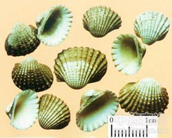

瓦楞子

拼音
Wǎ Lénɡ Zǐ
别名
蚶子壳、毛蛤、瓦垅
来源
本品为蚶科动物毛蚶Arca subcrenata Lischke 、泥蚶Arca granosa Linnaeus或魁蚶Arca inflata Reeve 的贝壳。秋、冬至次年春捕捞，洗净，置沸水中略煮，去肉，干燥。
生境分布
主产浙江、江苏、山东、广东、辽宁等地。
药材特点
动物形态详"蚶"条。
性状
毛蚶：略呈三角形或扇形，长4～5cm，高3～4cm。壳外面隆起，有棕褐色茸毛或已脱落；壳顶突出，向内卷曲；自壳顶至腹面有延伸的放射肋30～34条。壳内面平滑，白色，壳缘有与壳外面直楞相对应的凹陷，铰合部具小齿1列。质坚。无臭，味淡。 泥蚶：长2.5～4cm，高2～3cm。壳外面无棕褐色茸毛，放射肋18～21条，肋上有颗粒状突起。 魁蚶：长7～9cm，高6～8cm。壳外面放射肋42～48条。
性味
咸，平。
功能主治
消痰化瘀，软坚散结，制酸止痛。用于顽痰积结，黏稠难咯，瘿瘤，瘰疬，症瘕痞块，胃痛泛酸。
用法用量
9～15g，宜先煎。
化学成分
1.魁蚶，贝壳含大量的碳酸钙，少量磷酸钙量在93%以上（按碳酸计算）；尚含少量镁、铁、硅酸盐、硫酸盐和氯化物及有机质。 2.泥蚶 贝壳含碳酸钙90%以上，另含少量磷酸钙，总钙量在93%以上（按碳酸钙计算）；有机质约1.69%；尚含少量镁、铁、硅酸盐、硫酸盐、磷酸盐和氯化物。煅烧后，碳酸钙分解，产生氯化钙等，有机质则被破坏。 3.毛蚶 贝壳含大量的碳酸钙，少量磷酸钙，总钙最93%以上（按碳酸钙计算）；尚含硅酸盐和无机元素铝、氯、铬、铜、铁、钾、锰、钠、镍、磷、硫、硅、锶、锌；并且毛蚶外壳对核素锰有特异的富集能力。
药理作用
1：无药理作用数据
摘录
《全国中草药汇编》